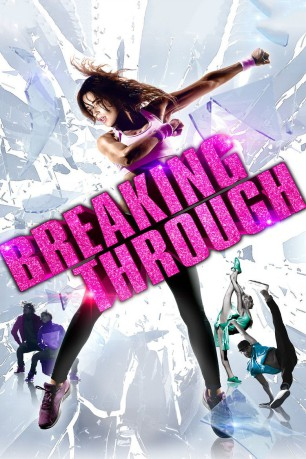

#2247 Breaking Through
Alternativ: Breaking Through
 
 IMDB-Wertung: 4.3 / 10
IMDB-Wertung: 4.3 / 10  Metascore: 0
Metascore: 0 
Casey (Sophia Aguiar) und ihre Freunde wünschen sich nichts sehnlicher, als mit einem Tanzvideo groß rauszukommen. Sie arbeiten unermüdlich an Aufnahmen, die sie auf YouTube veröffentlichen, doch die Klickzahlen bleiben zu ihrer großen Enttäuschung im Keller. Als Talent-Scout Quinn (Jay Ellis) auf sie aufmerksam wird und die Mittel für ein professionelles Video zur Verfügung stellt, kann Casey ihr Glück daher kaum fassen. Die Freunde sind zunächst begeistert, da sie nun endlich ein gutes Video aufnehmen können, doch bald zeigt sich, dass Quinn eigentlich nur an Casey und ihren Choreographien interessiert ist. Während Casey den Weg zum Ruhm weiter voranschreitet, müssen die anderen immer mehr in den Hintergrund treten. Der aufstrebenden Tänzerin ist dabei nicht klar, dass sie bald sehr viel mehr verlieren als gewinnen könnte.
Jahr: 2015
Dauer: 90 Minuten
FSK: 6
Land: USA Studio: XLrator MediaTonspuren:
Untertitel:
Auflösung: 720p (1280x536) Größe: 2949 MB
Genre: Drama, Musik
Regisseur: John Swetnam
Drehbuch: John Swetnam
Soundtrack: Dennis Smith
Darsteller:
- Sophia Aguiar als Casey
- Shaun Brown als Phillip
- Kelsey Crane als Heather
- Jay Ellis als Quinn
- Marissa Heart als Tara
- Taylor Locascio als BigMakk
- Taeko McCarroll als Michelle
- McCarrie McCausland als Nick
- Marcus Emanuel Mitchell als Bryson
- Carlito Olivero als Ricky
- Dominic Sandoval als D-Trix
- Lindsey Stirling als Phelba
- Jordan Rodrigues als JJ
- Robert Roldan als Drew
- Julie Warner als Mom
- Megan Batoon als Park Dancer
- Jenna Borrenpohl als Park Dancer
 Krystal Ellsworth als Park Dancer
Krystal Ellsworth als Park Dancer- Sean Lew als Park Dancer
- Natalie Friedman als Park Girl #1
- Samantha Simon als Emma , uncredited
- Anitta als Anitta
- Larry Bourgeois als Larry
- Laurent Bourgeois als Laurent
- Lawrence Devera als Law
- Ian Eastwood als Camera Man #1
- Kashif Gaines als MC
- Keone Madrid als Keone Madrid
- Mari Madrid als Mari Madrid
- Elizabeth Helen Maqueda als Rose
- Bruna Marquezine als Roseli
- Andrew-Chad Fausto Mayate als Fausto
- Can Nguyen als Candy
- Charlie Nguyen als Viet
- Matt Nguyen als Dumbo
- Trevor Takemoto als Camera Man #2
- Justin Valles als Jet Li
- Ellen Kim als Park Dancer
- Jan Voinov als Park Dancer
- Porcia Hendrix als Bryson's Back Up
- Lauren Schnapper als Bryson's Back Up
- Redrockers als Hip Hop Crew 1
- Sir Charles Wiggins III als Hip Hop Crew 1
- Michele Garman als Hip Hop Crew 1
- Ashanti Mikeya als Hip Hop Crew 1
- Alexandra Schween als Hip Hop Crew 1
- Deshon Hamilton als Hip Hop Crew 1
- Oceans11 als Hip Hop Crew 2
- Fresh Redding als Hip Hop Crew 2
- Devin Solomon als Hip Hop Crew 2
Datei: X:\2015(A-F)\Breaking Through (2015, FSK, 1280x536).mkv seit 23.10.2015
Festplatte: HD 2015(A-Z)
 Es gibt insgesamt 143 Filme in der Gruppe '2015(A-F)'
Es gibt insgesamt 143 Filme in der Gruppe '2015(A-F)'